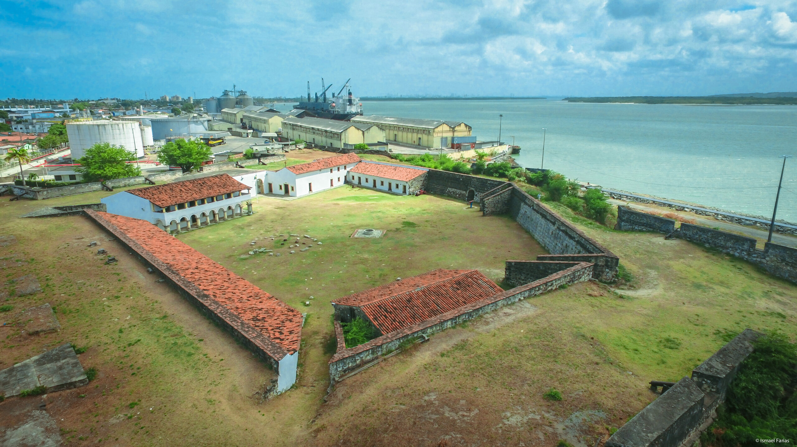
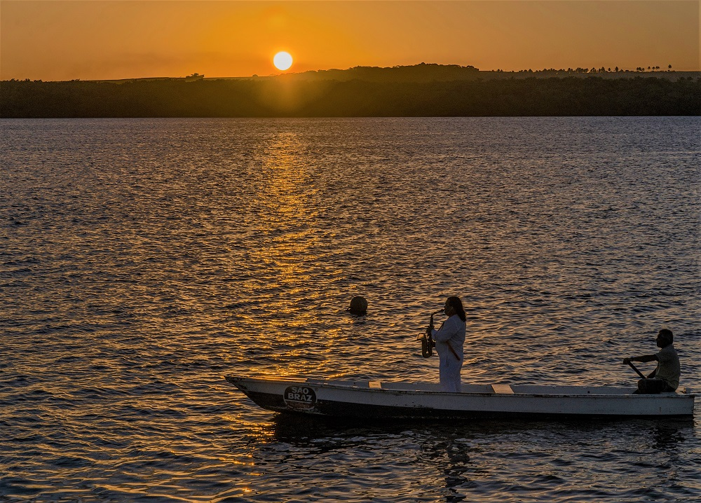
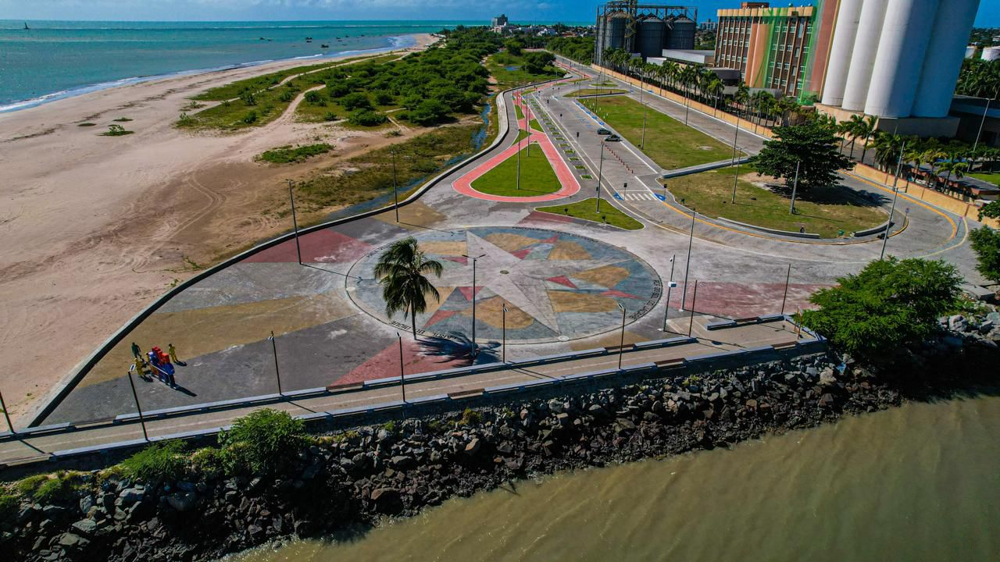
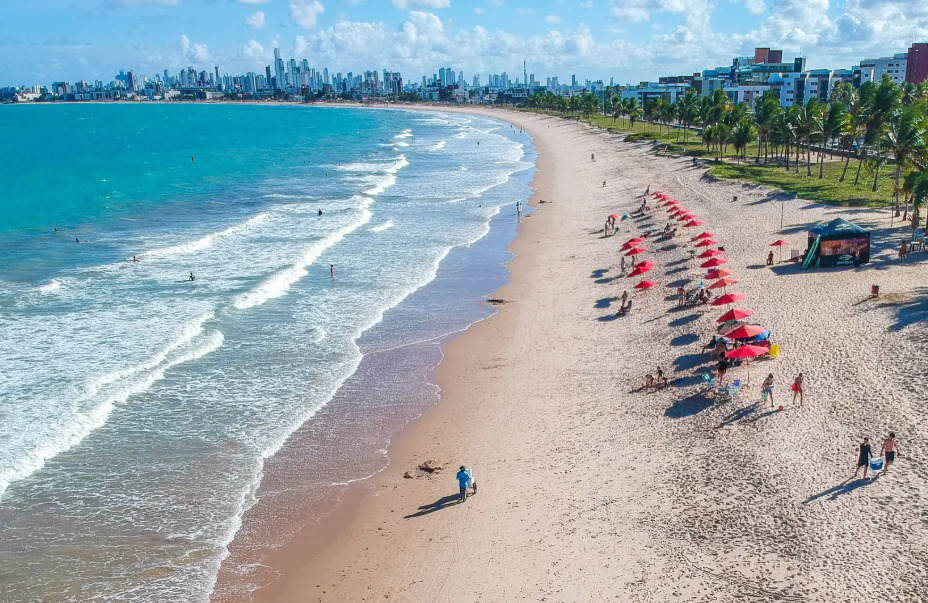
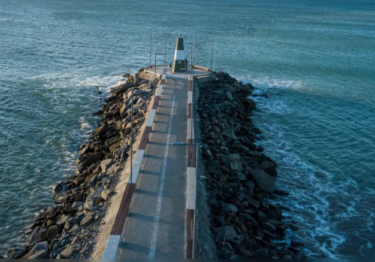
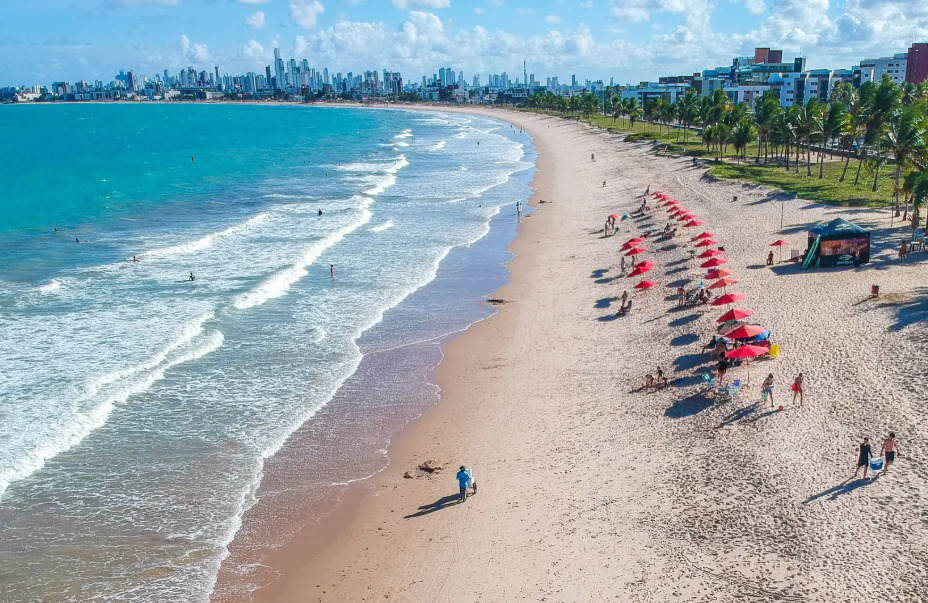
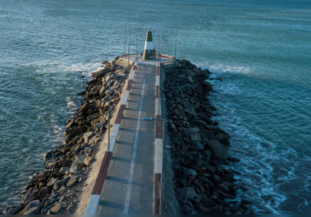

Cabedelo
Conheça a cultura do litoral paraibano
Local de patrimônio historico
A Fortaleza de Santa Catarina, localizada em Cabedelo, Paraíba, é uma construção histórica do século XVI, erguida pelos portugueses para proteger a entrada do Rio Paraíba e a então capital, Filipéia de Nossa Senhora das Neves (atual João Pessoa). Testemunha de importantes eventos da história colonial brasileira, resistiu a invasões e passou por diversas reformas ao longo dos séculos. Hoje, é um importante patrimônio histórico e turístico, oferecendo aos visitantes um mergulho no passado e belas vistas da região.
Praia do jacaré
Às margens do Rio Paraíba, o parque proporciona um cenário encantador para apreciar o sol se despedir no horizonte. O momento se torna ainda mais especial com a apresentação diária do "Bolero de Ravel" tocado ao vivo pelo saxofonista Jurandy do Sax em uma embarcação, seguido pela emocionante "Ave Maria". Recentemente revitalizado, o parque conta com infraestrutura renovada, incluindo um calçadão moderno, ciclovia, áreas de lazer e espaços para contemplação, tornando a visita ainda mais agradável e segura. É um lugar onde a beleza natural se encontra com a cultura local, criando memórias inesquecíveis
O pôr do sol do Jacaré é um espetáculo que encanta os visitantes com sua beleza única. A combinação do sol se pondo no horizonte, refletindo suas cores vibrantes nas águas do rio, cria uma atmosfera mágica. É um momento perfeito para relaxar e apreciar a natureza em sua plenitude.
Dique de Cabedelo
O Dique de Cabedelo oferece um espetáculo natural com o encontro do rio Paraíba e o Oceano Atlântico. É um local tranquilo com brisa agradável, ideal para relaxar e apreciar o pôr do sol. Recentemente revitalizado, oferece infraestrutura para visitantes e moradores, sendo um ponto turístico extremamente atrativo.
Litoral fascinante
 



O litoral de Cabedelo, na Paraíba, encanta pela sua beleza natural e atmosfera acolhedora. Com praias de águas tranquilas e areia clara, o cenário convida a quem busca tranquilidade e contato com a natureza.
Surfe e pesca local
.jpg)
Cabedelo, na Paraíba, é um verdadeiro paraíso para os amantes do surf. Com praias de águas cristalinas e ondas que variam entre suaves e desafiadoras, a região atrai surfistas de todos os níveis. Destinos como a Praia de Intermares são conhecidos por suas condições favoráveis ao esporte, com swells consistentes e ventos que proporcionam boas manobras.
Além disso, a cultura do surf é vibrante, com escolas especializadas, competições locais e uma comunidade apaixonada que vive e respira o esporte. Para quem busca adrenalina ou apenas deseja deslizar sobre as ondas em um cenário paradisíaco, Cabedelo é um destino imperdível
A pesca em Cabedelo, na Paraíba, é uma atividade tradicional e essencial para a economia local, a cidade, próxima ao oceano e à foz do Rio Paraíba, oferece boas condições para pesca artesanal e em alto-mar. Além de sustento, a pesca faz parte da cultura da região.